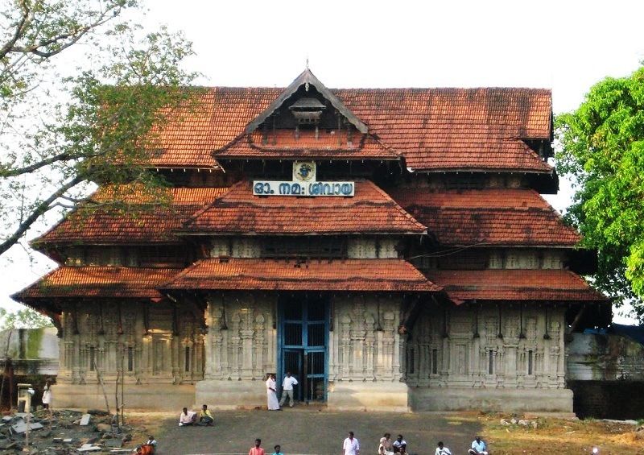
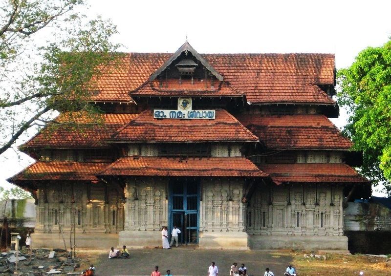

The cultural capital of Kerala, the Poorams or temple festivals in Thrissur draw in thousands of people every single year as these carnivals encapsulate every single part of Kerala's rich heritage. These are a hotbed of folk art performances and heritage tours that will give you an in depth look into some of the grandest traditions of the State. From majestic elephants to colourful pulikali processions to the world renowned Thrissur Pooram, there is always a festive atmosphere in the air. The district is also the abode of several cultural centres like Kerala Kalamandalam, Sahitya Academy and the Sangeetha Nataka Academy. Thrissur is a place one must visit at least once in their lifetime. The people, swaying with the beats of the chenda, shall help you understand the true heart and spirit of Kerala.
Trichur (also known as Thrisshivaperur and formerly, Trichur) is a city in the south Indian state of Kerala . It is the fourth largest city in Kerala after Trivandrum, Kochi and Kozhikode , and the 21st largest in India.
Thrissur city is known to be the cultural capital of the state of Kerala, and has various interesting and amazing places and sights to see including religious centres (temples, churches, etc), wildlife sanctuaries, museums and ecological attractions like waterfalls and beaches.
Vadakkunathan Temple
Shakthan Thampuram Palace – An 18th century palace, with Dutch influences in architecture
Basilica of Our Lady of Dolours
Paramekkavu Bhagavathy Temple
Mammiyoor Sree Mahadeva Temple
Chowalloor Shiva Temple
Kottappuram Muziris Fort – An ancient fort built by the Portuguese, whose remains only exist in Thrissur today
Kodungalloor Sree Kurumba Bhagavathy Temple
There are many markets for shopping in Thrissur where one can spend quality time with their family and friends if they are planning a trip to the place. So here we are with a list of the best shopping places in Thrissur which will help you pick the most authentic items of Thrissur with ease.
Best Places For Shopping In Thrissur
The HiLite Mall : The Hi-Lite Mall of Thrissur is very famous among youngsters for displaying a range of products; from fashion and electronics to accessories and books and from gift shops to big watch showrooms.
The Mall of Joy : The Mall of Joy is mostly famous for its traditional Indian clothes. There is a wide variety of outfits available in the mall, and there are also jewelry shops like Joyalukas present. All these categories are available at a very reasonable price and thus prove to be very economical for the customers. There are also grocery shops, baby shops, and a food court.
The Selex Mall : The Selex Mall is the most popular mall for shopping in Thrissur, Kerala. Not only are famous brands present at the mall but also local and upcoming brands. Although there isn’t any food court in the mall, there are several restaurants that serve mouth-watering dishes for the public.
The Sobha City Mall : The Sobha City Mall comprises shops across all requirements – be it men’s apparel, kid’s apparel, women’s apparel, accessories or electronics.
City Centre : City Centre is amongst the most favorite shopping places in Thrissur and even though the mall is comparatively smaller in size, it suffices to all your needs as it comprises of electronic shops, accessory shops, apparel, and footwear shop. There is also a food court and a bakery shop present inside the mall where you can binge guilt-free on finger-licking dishes!


 
